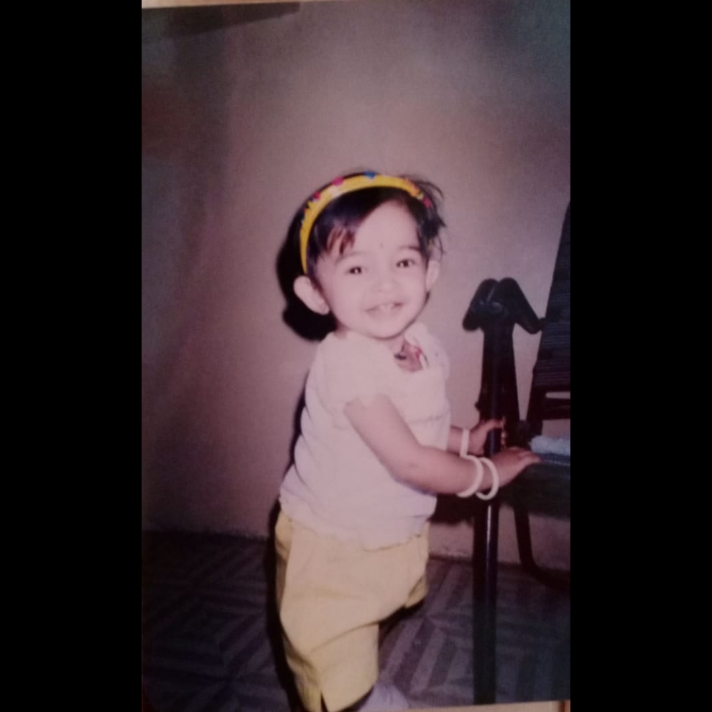

Letter
राजा जी, जब आप उदास होते हैं, तो यह लगता है जैसे आकाश पर छाए बादल मेरे दिल को भी घेर लेते हैं। मैं समझती हूँ कि कभी-कभी दिल को ठीक करने के लिए शब्द भी कम पड़ जाते हैं। लेकिन मैं चाहती हूँ कि आप जानें कि आप कभी अकेले नहीं हैं। आपके साथ मेरा दिल हमेशा हर सुख-दुख में है। कभी-कभी हमें खुद को सुकून देने की ज़रूरत होती है। इसी तरह की भावना को व्यक्त करने वाली ये शायरी आपके साथ साझा कर रही हूँ: “जब मन उदास हो और दिल थका लगे, हर घड़ी का दर्द बस थोड़ी सी राहत मांगे। जैसे चमकती है रातों में चाँदनी की किरने, वैसे ही आएगी आपके जीवन में फिर से हंसमुख सुबह की किरणें।” “धूप छाँव का खेल जीवन का हिस्सा है, हर दुख के बाद खुशी का सफर बस शुरू होता है। आपकी मुस्कान, आपके हंसी का वो रंग, हर उदासी से ज़्यादा सुंदर और ज़्यादा रंगीन।” मैं जानती हूँ कि आपकी उदासी को तुरंत दूर करना आसान नहीं है, लेकिन मैं हमेशा यहाँ हूँ, आपके साथ हर पल। उम्मीद करती हूँ कि ये शब्द आपको थोड़ा सा सुकून दें और आपकी उदासी को कुछ कम करें।
Quote
“उदासी एक क्षणिक स्थिति है; सच्चे प्रेम और समझ से हर अंधेरा दिन प्रकाशमय बन सकता है।”
Image
Song
Tips
Call immidiately- 7016242037 or 8789216887
chant krishna mantrawali